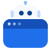
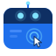

侧边栏浏览器自动化 · 图标方案
4 个方向,统一 64×64 网格 / 蓝色系;每个方案按 96 / 48 / 32 / 24 / 16 px 检查小尺寸识别度。
draft 2 · 2026-11-08
A
机器人窗口
推荐
浏览器窗口里坐着一个机器人脑袋,天线从标题栏探出。最直接:一眼看出「浏览器 + 机器人」,16px 仍能辨认。
48
32
24
16

B
窗口探头
机器人从窗口上沿探出头,浏览器成了它的操作台。比 A 更有性格、更「拟人」,但小尺寸时头部占比偏大。
48
32
24
16

C
窗口即机器人
标题栏变成机器人的面罩(青色双眼 + 天线),页面里一个光标正在点击。最简洁,几何感强,小尺寸靠两条亮眼撑住。
48
32
24
16
D
机器人气泡
浏览器窗口 + 机器人对话气泡,保留现有图标「窗口 + 气泡」的骨架,只把播放三角换成机器人脸。改动最小、最保守。
48
32
24
16
现有图标:
蓝色窗口 + 白色对话气泡里的播放三角
替换范围:
插件封面 icon.svg + 侧栏 start page 的 16px 单色字形
选定后:
同步重绘单色版,并替换 icon.svg / client.js